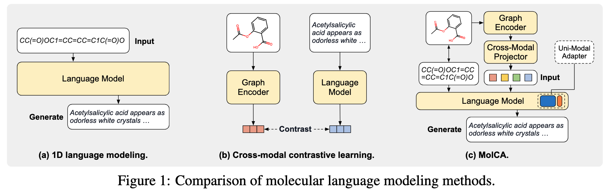
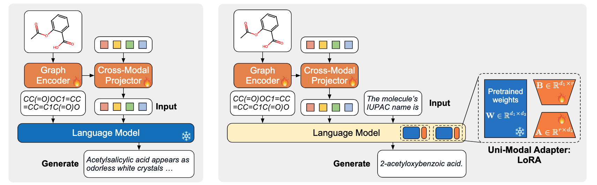

Technical Description
• Comparison to Previous Molecule-Text Modeling Methods

- 1D language modeling methods represent molecules by their 1D Simplified Molecular Input Line Entry System (SMILES) strings and process them in a manner similar to texts, as illustrated in Figure 1a. While convenient, treating molecules as strings overlooks the molecules' 2D graph representations, which are crucial to human professionals in comprehending the molecule structures.
- Cross-model contrastive learning methods represent molecules as graphs and use a Graph Neural Network as the molecular graph encoder. The graph encoder is trained jointly with an LM through cross-modal contrastive learning, as illustrated in Figure 1b. However, the application scope of cross-modal contrastive learning is limited: it is suitable for retrieval tasks, but is insufficient for open-ended molecule-to-text generation tasks, such as molecule captioning and molecule's IUPAC name prediction. This is because molecule-to-text generation is a conditional generation task. It requires the LM to understand 2D graphs as the generation conditions, which contrastive learning cannot achieve.
- MolCA enables the LM to understand 2D graphs as inputs, therefore effectively conditioning the molecule-to-text generation process. To enable the LM to understand 2D graphs, we identify that the key challenge is cross-modal alignment: translating the representations of 2D graphs into 1D soft prompts in the text space so that the LM can understand. This translation is facilitated by the cross-modal projector, bridging the gap between the graph encoder's representation space and the LM's input space, as illustrated in Figure 1c.
• MolCA's Training Pipeline
As illustrated below, MolCA uses a three-stage training pipeline to integrate its components. The two pretrain stages aim to develop the cross-modal alignment ability of the cross-modal projector.
- Pretrain Stage 1. The projector and the encoder are trained to extract the molecule features that are the most relevant to the text. This stage endows the resulting model with powerful molecule-text retrieval ability.
- Pretrain Stage 2 (left). The cross-modal projector is connected to a frozen LM and trained for molecule captioning. This task forces the cross-modal projector to produce soft prompts that the LM can understand
- Finetune Stage (right). MolCA is fine-tuned for downstream generation tasks. The example shows the prediction of a molecule's IUPAC name.


Demonstrations
• Example-1: Molecule Captioning
• Example-2: Molecule Captioning

Related Links
This work partially draw inspirations from BLIP-2 and InstructBLIP, MolT5, and KV-PLM. This website is inspired by NExT-GPT.
BibTeX
@inproceedings{liu2023molca,
title={MolCA: Molecular Graph-Language Modeling with Cross-Modal Projector and Uni-Modal Adapter},
author={Liu, Zhiyuan and Li, Sihang and Luo, Yanchen and Fei, Hao and Cao, Yixin and Kawaguchi, Kenji and Wang, Xiang and Chua, Tat-Seng},
booktitle={EMNLP},
year={2023},
url={https://openreview.net/forum?id=14WRhMNq7H}
}